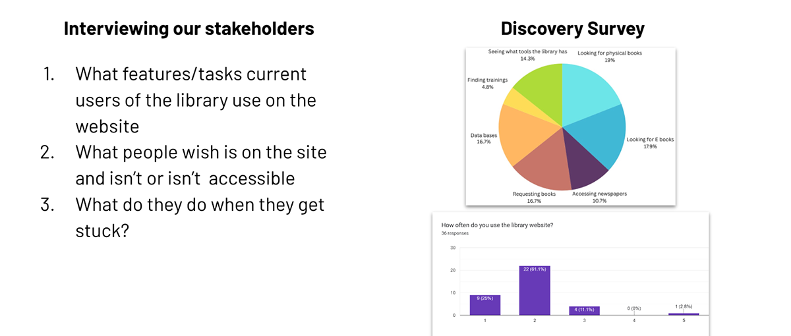
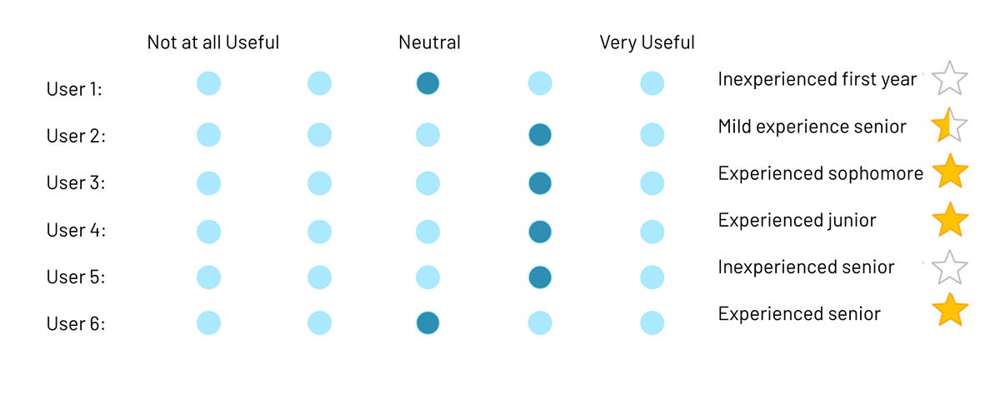
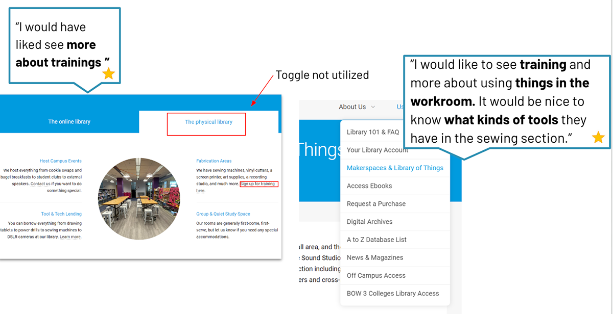
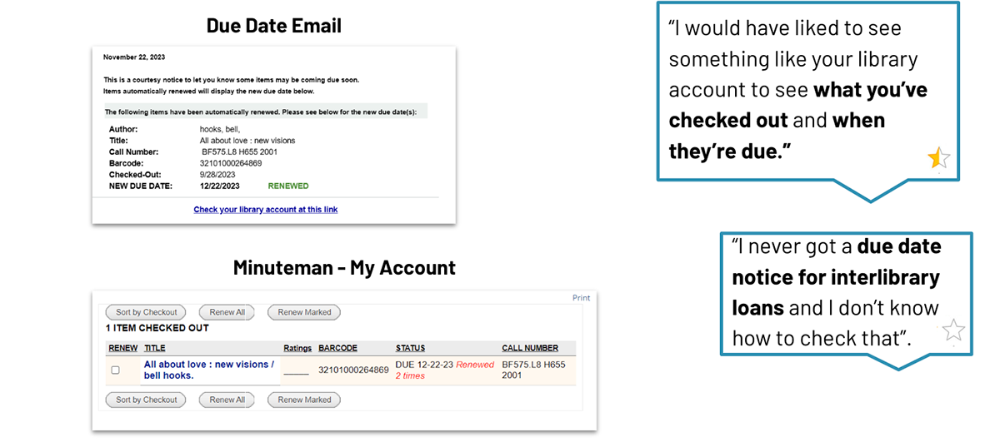
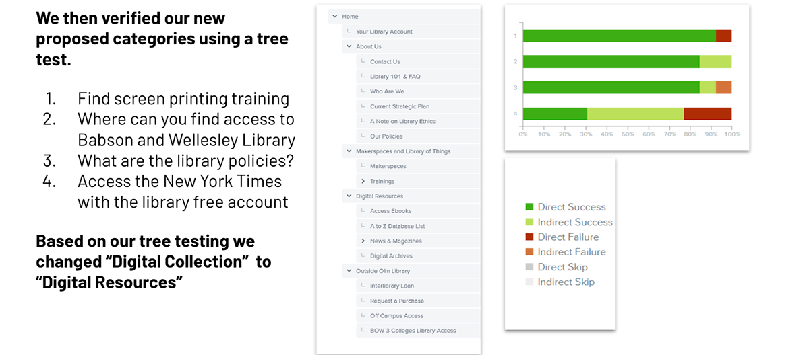
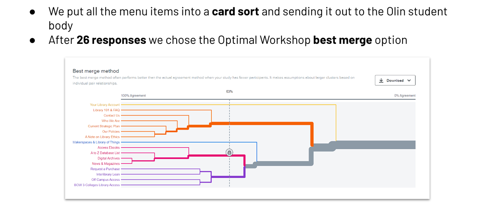
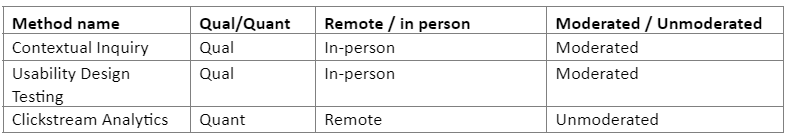
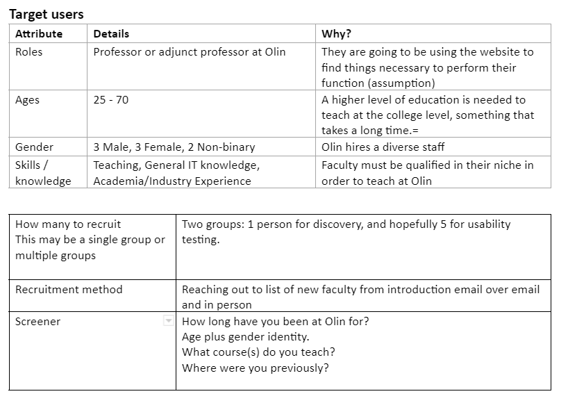
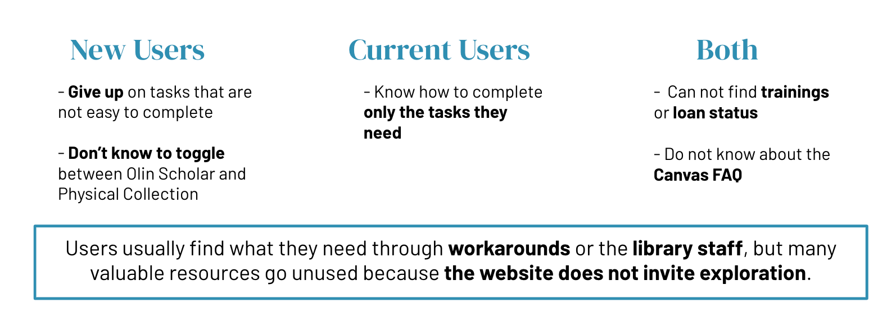

Mixed Methods for Product Evaluation
Course overview
This course gave me an opportunity to deep-dive into a variety of qualitative and quantitative research methods, with a goal of mastering user research from multiple perspectives.
Project goals
In this project, I set out to enhance the usability and accessibility of Olin.edu's Academics Page, with a particular focus on understanding the needs of new faculty members navigating the platform. The project was split into two key phases:
Discovery Phase: Uncovering user motivations, behaviors, and pain points through qualitative interviews and contextual inquiry.
Testing Phase: Conducting usability tests to validate our design hypotheses and inform actionable improvements.


Methodologies and tools
The core of this project was a mixed-methods approach, balancing qualitative insights with quantitative data to provide a 360-degree view of user interactions.
Qualitative research
In-depth interviews: These interviews with new faculty members provided rich narratives around the challenges they faced when using the Olin.edu Academics Page. Understanding their context was key in tailoring solutions to their needs.
Persona development: Based on interviews, I clustered responses to create detailed personas, which were used throughout the project to ensure our design decisions were grounded in real user behaviors.
Usability testing & observations: We tested the website's navigation flow, identifying specific pain points through direct user observations and think-aloud protocols. This allowed us to map moments of confusion and frustration, turning these into opportunities for design improvements.


Quantitative research
Web analytics & heat mapping: Using Google Analytics and heat mapping, I analyzed click patterns and engagement metrics to understand how users interact with specific sections of the Academics Page. This gave us quantitative evidence of high-traffic areas and pages users struggled with.
A/B testing & card sorting: We experimented with new layouts and navigation structures to validate design changes. A/B tests revealed which designs led to better engagement, while card sorting helped us understand the logical organization of information from a user's perspective.
Surveys & tree testing: Our surveys provided valuable feedback from a broader group of users, while tree testing helped refine navigation, ensuring that users could easily find the content they needed.


Impact and results
Reduction in task completion time: Usability testing showed a 30% reduction in the time new faculty needed to complete key tasks, such as accessing academic resources.
Increased user satisfaction: Post-launch surveys revealed a 25% increase in user satisfaction with the site's navigation and overall usability.
Actionable insights for continuous improvement: Our findings were presented to the Olin web development team, offering them a roadmap for future enhancements and a deeper understanding of user priorities.
Additional testing information


Key insights

In summary
Quantitative tools used: Web Analytics (via Google Analytics) · A/B Testing · Card Sorting · Tree Testing · Surveys · Heat mapping
Qualitative methods used: Direct Interviews · Usability Tests + Observations · Persona Clustering · Clustering Qualitative Comments